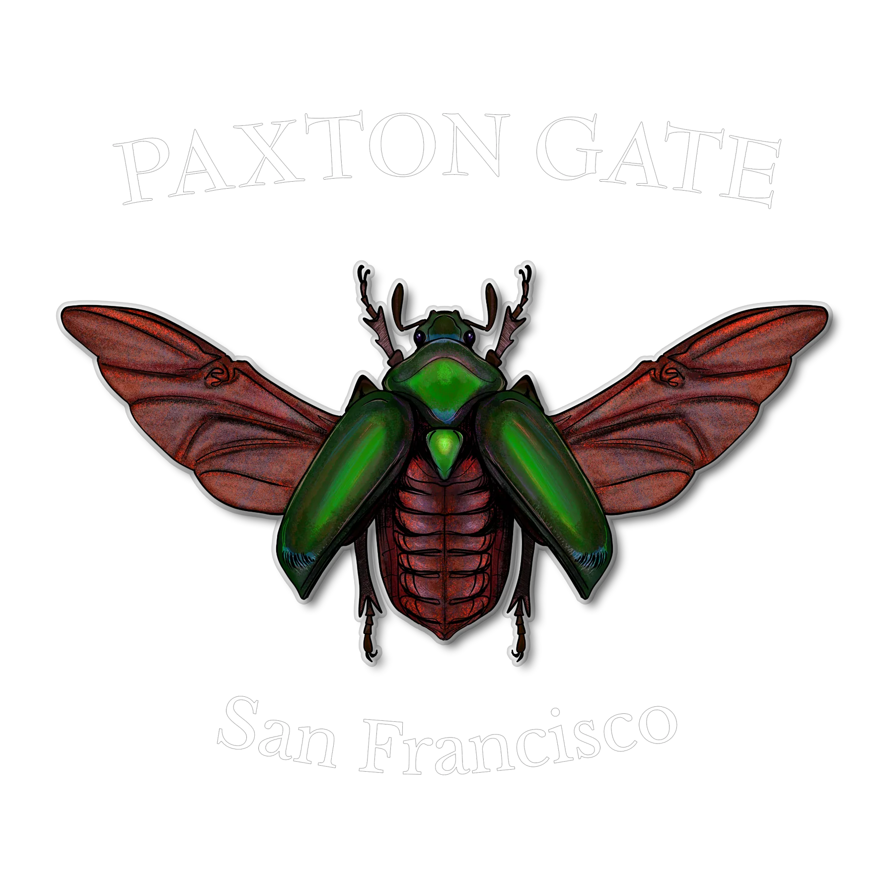

Chapter V · Visual Communication
Scientific Illustration
I drew every species taught in Paxton Gate’s pinning classes: accurate enough to teach from, good enough to wear. Some went onto shirts, stickers and temporary tattoos.
- Visual craft
- Scientific accuracy
Click to enlarge drawing.
Moths & butterflies
Beetles
And the others
In progress

Licensed and on sale